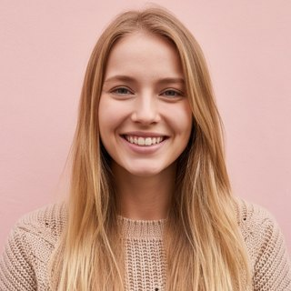
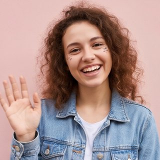
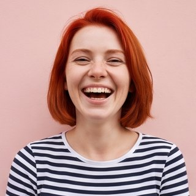
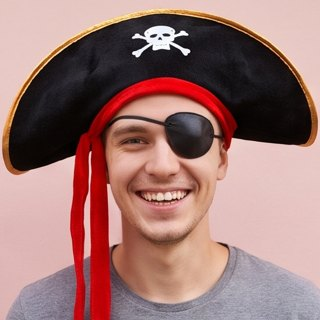
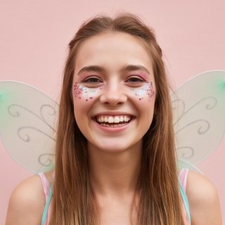
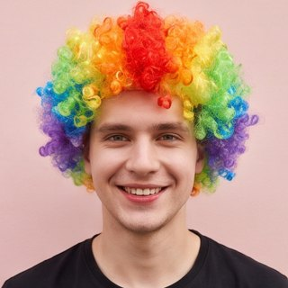
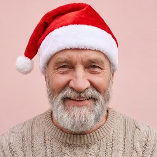
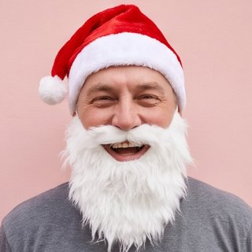

Карточки людей вместо силуэтов
4 кадра для примерки. Человечки-иконки заменены карточками, как в настоящем приложении: фото, имя, роль, оценка, статус. Шрифт один, свечений нет. Последний кадр показан на розовом фоне, чтобы сравнить с тёмным.
1. Сцена 3. Ивану нужны люди
Голос: «А ещё нужны шесть промо-моделей, четыре аниматора и аниматоры на детские мастер-классы». Движение: пустые кружки по одному заполняются лицами на удар музыки.



2. Сцена 4. Команда собирается в телефоне
Голос: «А в телефоне видно, как собирается команда». Движение: карточки въезжают снизу по одной, статус меняется с «ищем» на «подтвердила».
собирается
Аниматоры 2 из 4



3. Сцена 8. Дед Мороз заболел
Голос: «Заболел Дед Мороз? Замена уже едет». Движение: карточка сереет и уезжает, на удар сверху падает новая со статусом «замена найдена».
не останетесь


4. Сцена 5. База проверенных людей (розовый фон)
Голос: «Аниматоры, хостес, Деды Морозы: все в одном месте». Движение: стена карточек медленно едет вверх, камера отъезжает, карточек становится сотни.
Что здесь придумано мной и требует твоего слова: имена, оценки, «212 выходов», «за 14 минут», роли «официант» и «координатор». Лица сгенерированы нейросетью, это не реальные люди из базы.
Если у Насти есть настоящие фото персонала с согласием на показ, ставлю их: будет честнее и сильнее.